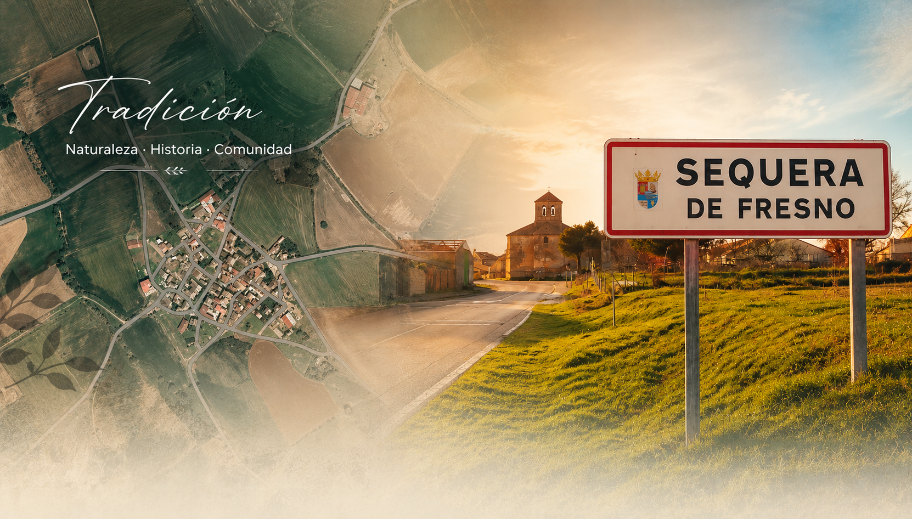

SEQUERA DE FRESNO
Tradición • Historia • Comunidad
🍻 PEDIDOS DE ROPA OFICIAL
Tradición • Historia • Comunidad
🍻 PEDIDOS DE ROPA OFICIALUn lugar donde la historia, las tradiciones y la convivencia siguen formando parte de la vida diaria.
Descubre nuestro patrimonio, nuestras fiestas y todo lo que hace especial a Sequera de Fresno.
